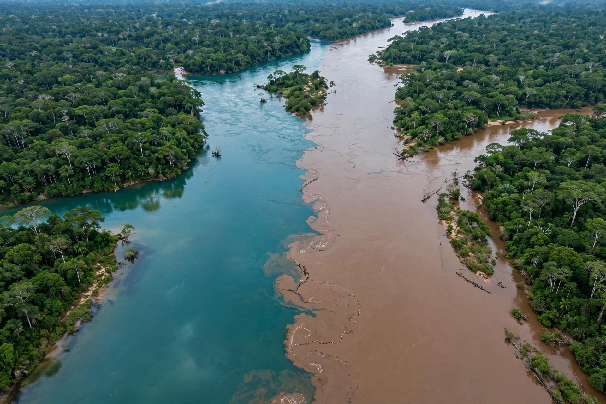

| Santarém | |
 | |
| Country | Brazil |
|---|---|
| State | Pará |
| Founded | 22 June 1661 |
| Population | about 330,000 |
| Location | Confluence of the Tapajós and Amazon rivers |
Santarém is a city and municipality in the western part of the state of Pará in Brazil, situated at the confluence of the Tapajós River with the Amazon River. It is one of the oldest settlements in the Brazilian Amazon and a major river port.
Before European colonisation the site was the centre of the Tapajó Indigenous people, known for their distinctive Santarém-culture ceramics. A Portuguese Jesuit mission was founded in 1661. In 1867 a group of Confederate exiles from the United States settled near the town after the American Civil War; their descendants, the Confederados, remain part of local heritage. Henry Ford established the rubber plantation town of Fordlândia, and later Belterra, in the municipality's region in the late 1920s and 1930s.
Opposite the city, the clear blue-green waters of the Tapajós run alongside the muddy Amazon for several kilometres in a "meeting of the waters" before mixing. The nearby village of Alter do Chão, with its white-sand river beaches, is a well-known tourist destination.
Santarém is a significant port for soybeans shipped down the BR-163 highway from Mato Grosso and exported via the Amazon, as well as a centre for fishing, timber and regional commerce.